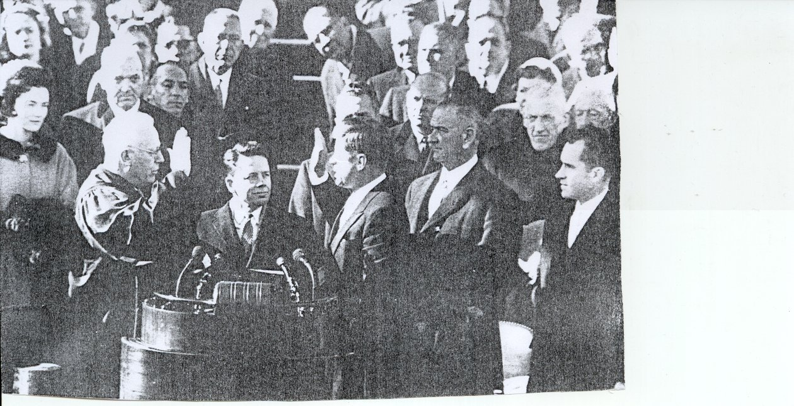

The Presidency
Kennedy missed being nominated for vice president by a few votes in 1956. But he gained introduction to millions of Americans who watched the Chicago Democratic convention on television. When he decided to run for president in 1960 his name was widely known. His wealth enabled to assemble a staff and get around the country in a private plane. On winning his party’s nomination, Kennedy amazed nearly everybody by choosing Lyndon B. Johnson, who opposed him to nomination, to run for vice president.
Kennedy’s four television debates with the republican candidate, Richard M. Nixon, were a highlight of the 1960 campaign. The debates probably were important to Kennedy’s close victory 303 electoral votes to 219 for Nixon. The popular vote was breathtakingly close; Kennedy received only 18,574 more votes than Nixon – a fraction of 1 percent of the total vote

Kennedy being sworn in as president